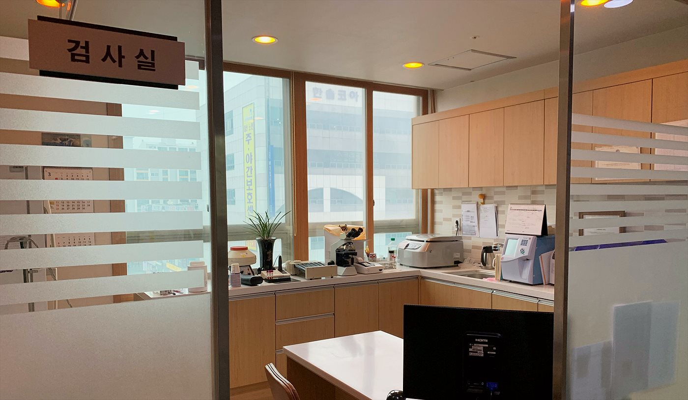

핵심 요약
- 통풍 치료의 핵심은 발작을 가라앉히는 것이 아니라 요산을 꾸준히 6.0mg/dL 이하로 유지하는 것입니다.
- 요산은 콩팥으로 배설되므로 통풍과 콩팥은 서로를 악화시키는 관계 — 통풍 환자는 콩팥 검사를 함께 받아야 합니다.
- 통풍 발작에 흔히 쓰는 진통소염제는 콩팥 기능에 따라 조심해야 하는 약이라, 콩팥을 아는 내과에서 처방받는 것이 안전합니다.
통풍은 왜 생기나요?
혈액 속 요산이 높은 상태가 지속되면 요산 결정이 관절에 쌓여 갑작스러운 염증 발작을 일으킵니다. 엄지발가락·발등·발목이 붓고 스치기만 해도 아픈 것이 전형적입니다. 술(특히 맥주), 고기·내장류, 과당 음료가 요산을 올리는 대표 요인입니다.
통풍과 콩팥의 관계
요산은 대부분 콩팥으로 배설됩니다. 콩팥 기능이 떨어지면 요산이 쌓여 통풍이 잘 생기고, 반대로 높은 요산과 반복되는 통풍은 콩팥 손상과 요로결석의 원인이 됩니다. 그래서 통풍 환자는 요산 수치와 함께 콩팥 기능을 정기적으로 확인해야 하며, 신장 진료 경험이 많은 내과에서 관리하는 것이 유리합니다.
노승현내과의 통풍 진료
- 요산 수치 목표 관리 — 발작 억제가 아니라 요산 6.0mg/dL 이하 유지가 장기 목표입니다.
- 콩팥 기능 병행 확인 — 크레아티닌·사구체여과율을 함께 추적하고, 콩팥 기능에 맞춰 약을 조절합니다.
- 생활 처방 — 피해야 할 음식과 수분 섭취 요령을 구체적으로 안내합니다.
요산을 올리는 음식, 낮추는 습관
| 구분 | 내용 |
|---|---|
| 크게 올리는 것 | 맥주·소주 등 술 전반, 간·곱창 등 내장류, 액상과당 음료(콜라·과일주스) |
| 양을 조절할 것 | 붉은 고기, 등푸른생선(고등어·꽁치), 새우·조개류 |
| 도움이 되는 습관 | 충분한 수분 섭취(콩팥병이 있다면 섭취량은 상의), 체중 감량, 저지방 유제품 |
※ 식이 조절만으로 낮출 수 있는 요산에는 한계가 있어, 발작이 반복되면 약물 치료가 기본입니다.
자주 묻는 질문
발작이 가라앉으면 약을 끊어도 되나요?
아닙니다. 통증이 없어도 요산이 높으면 결정은 계속 쌓입니다. 요산강하제는 꾸준히 복용하며 수치로 관리하는 것이 재발과 콩팥 손상을 막는 길입니다.
통풍인데 콩팥 검사도 받아야 하나요?
네. 통풍 환자는 콩팥 기능 검사와 소변검사를 정기적으로 권합니다. 요산 배설과 약물 용량 결정에 콩팥 기능이 기준이 되기 때문입니다.
일산에서 통풍 진료는 어디서 받나요?
노승현내과의원(일산서구 주엽동, 주엽역 인근)에서 요산 수치 확인과 콩팥 검사를 당일 진행합니다. 발작 중이라면 통증 조절부터, 발작 사이라면 요산강하 치료 계획부터 시작합니다. 문의 031-924-0875.
진료·투석 상담 안내
요산 수치와 콩팥 기능을 함께 추적해 발작 재발과 콩팥 손상을 막습니다. 노승현내과의원은 2003년 개원 이후 22년째 일산서구 주엽동 한 자리에서 투석과 신장·내과 질환을 진료하고 있습니다.
좋은치료의 DNA가 있는곳, 노승현내과의원
- 내과 전문의 원장 직접 진료
- 혈액투석 · 임시투석 · 야간투석 상담
- 혈액·소변검사 당일 확인, 초음파 검사
- 고혈압 · 당뇨 · 통풍 등 내과 질환 병행 관리
진료·투석 상담 031-924-0875 · 3호선 주엽역 인근, 고양시 일산서구 중앙로 1413 동영빌딩 6층